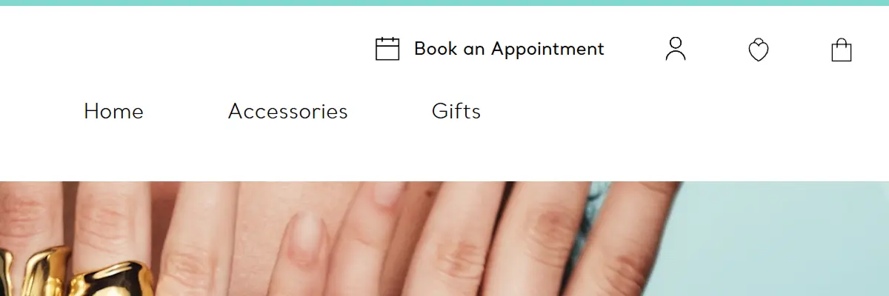
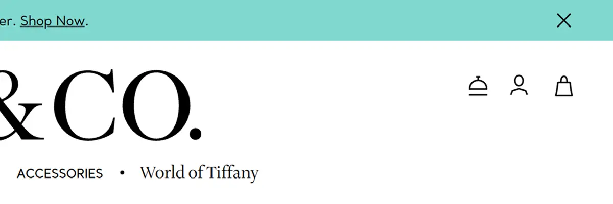
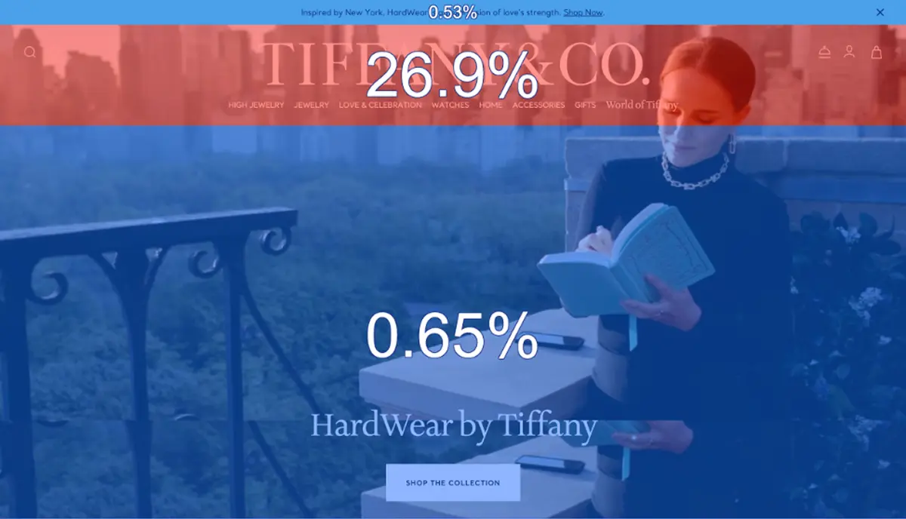
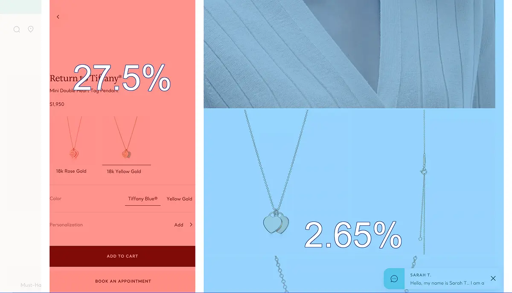
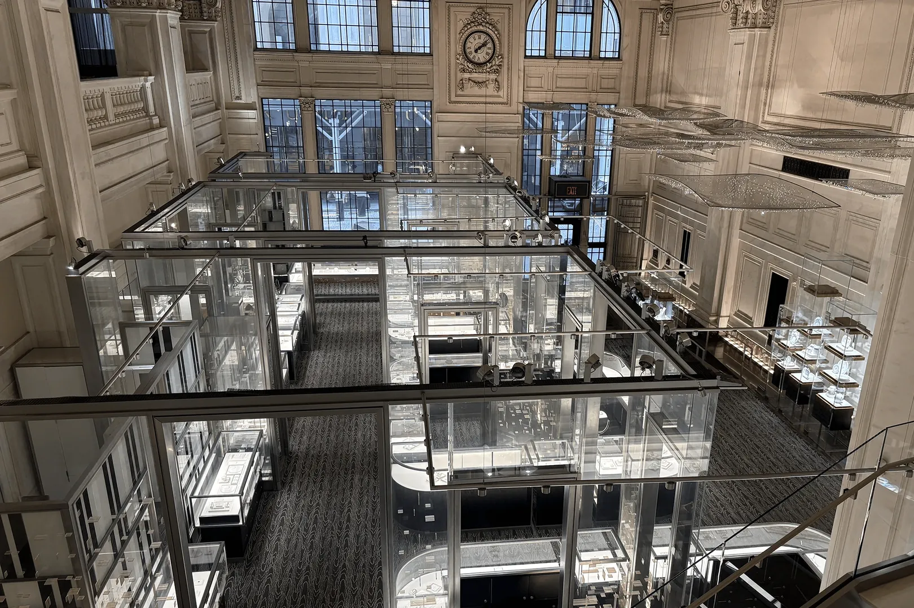
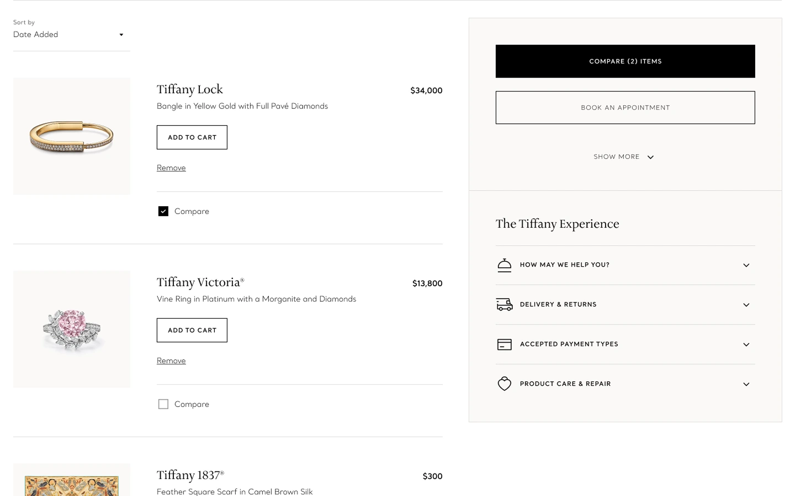
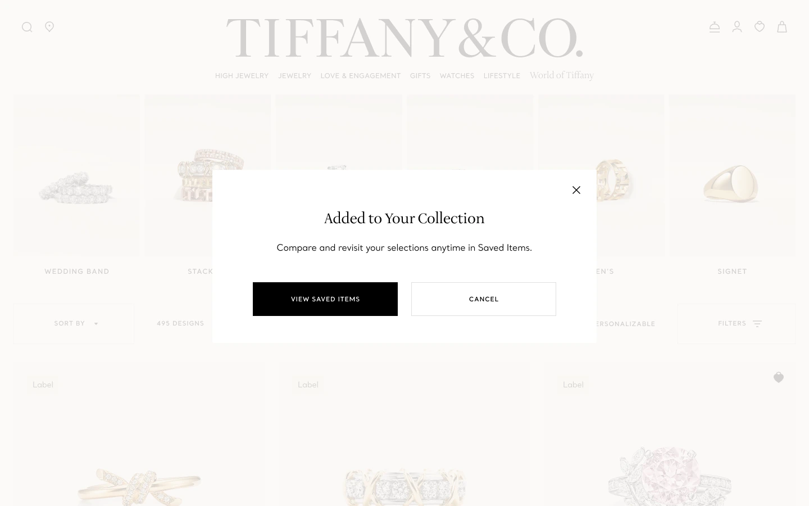
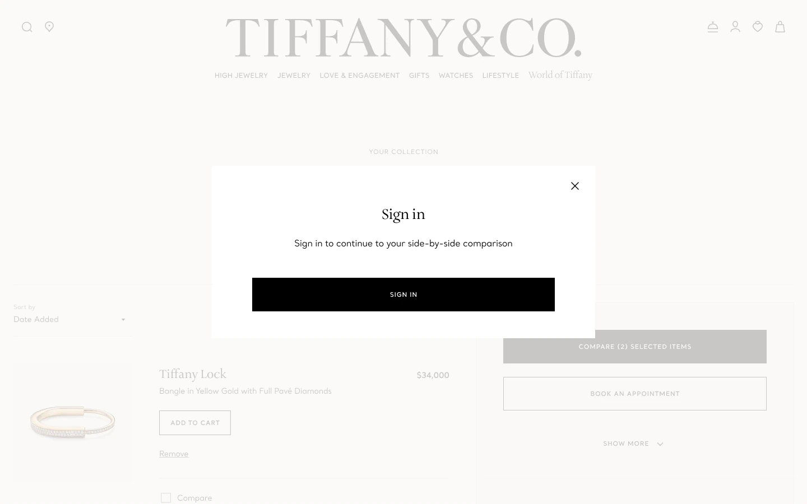
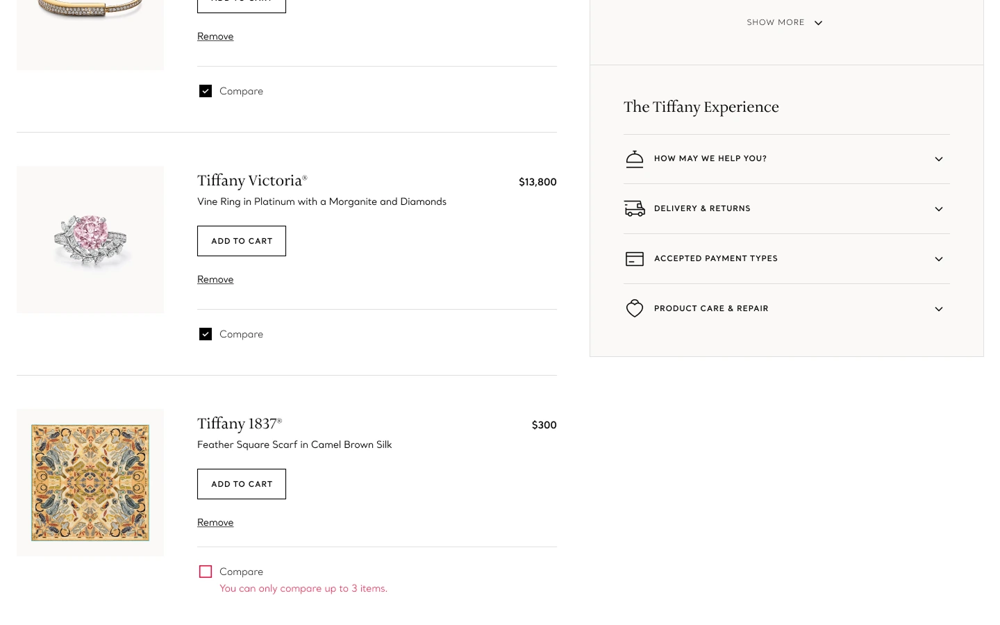
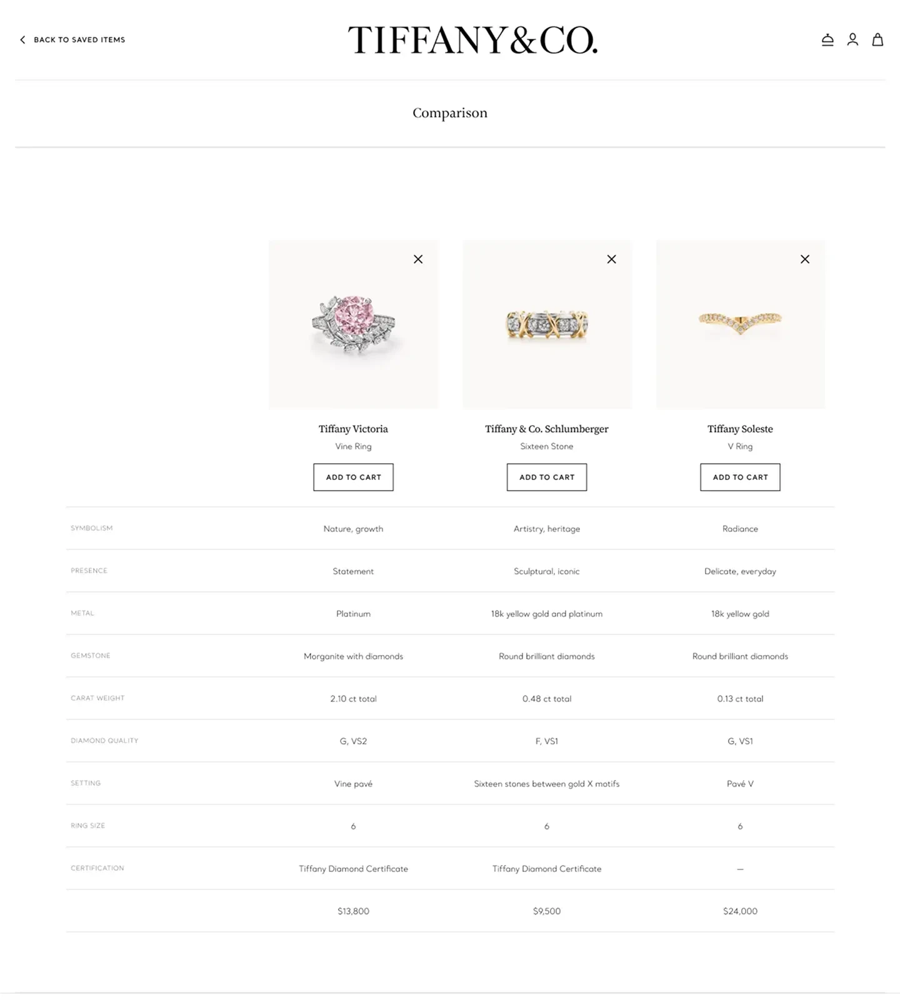

Overview
Tiffany’s e-flagship platform had no persistent wishlist, while the legacy sites do. I was asked to explore how persistent saving could work across the modern e-flagship sites, with entry points on product pages, category pages, search, and cart, and a brief that also included account-based persistence, multiple lists, sharing, and recommendations.


My work was an early phase of that larger effort. Rather than designing every capability end to end, I investigated how customers approached saving and consideration, determined which capabilities had the strongest basis for development, and turned that into a focused design direction: a saved-items experience paired with a dedicated comparison flow.
My Role
I led the research framing, survey design and analysis, interaction exploration, and interface decisions for the portion of the experience I scoped.
This was an individually assigned project. My manager provided design critique throughout and helped establish the broader product and business context. I also incorporated input from UX research partners, client advisors, store leadership, and other stakeholders where their expertise informed the work.
The Problem
The original user story:
As a Tiffany.com customer, I want to save items to a persistent wishlist and access expanded wishlist capabilities across the site, so that I can revisit my selections across sessions and devices, share them with others, and receive relevant recommendations.
Early in the project, I asked the director overseeing UX why the old wishlist had been removed. His response was that its purpose had not been clear enough to justify carrying it forward.
That made the project more than restoring an old feature. Before deciding how saving should work, I needed to understand what role it served in a luxury purchase: when customers want to return to products, what they are trying to accomplish when they save one, and how comparison and sharing fit into the same process.
What the research showed
Each source answered a different part of the problem.
Existing experience


ContentSquare zoning: click rate by page section, desktop, all visitors, 30 days.
ContentSquare showed how customers used product and commerce pages, and later informed where new controls could sit without disrupting established behavior. The cart already kept products indefinitely, so persistence alone would not differentiate a dedicated saved-items experience.
Competitive analysis
| Brand | Heart icon | On homepage | Icon on PLP | Icon on PDP | Size prompt | Guest access | Sub-lists | Sharing |
|---|---|---|---|---|---|---|---|---|
| Cartier | On hover | No | No | No | ||||
| Chanel | Star | On hover | No | No | ||||
| Louis Vuitton | No | No | ||||||
| Dior | On hover | No | No | No | ||||
| Prada | No | No | No | No | ||||
| Van Cleef | No | No | No | No | No | No | ||
| Nordstrom | No | With text in box | No | |||||
| Nike | No | With text in pillbox | No | No | ||||
| Amazon | Text | No | No | No | Preselected default | No | ||
| Target | No | Preselected default | No | |||||
| FashionNova | No | No | Individual items |
Among luxury competitors, saved-item organization was generally limited. Multiple lists and folders appeared more often in mass-market experiences, which showed where Tiffany’s brief extended beyond common luxury implementations.
Published research
Industry research from Bizrate Insights found that about half of shoppers don’t use wishlists, and that having to register or sign in is one of the main reasons. Academic research on wish lists found they can lower the chance of an eventual purchase, because customers judge a saved item on different qualities when they return to it than when they first saved it. Together, these shaped where account creation should enter the journey, and why returning to saved items needed support for re-evaluating them, not just storage.
Retail immersion

I spent a week at Tiffany’s Wall Street store speaking with client advisors and store leadership. Customers often compared a small number of pieces before purchasing, with an advisor placing them side by side and talking through the differences. The website offered no equivalent. Comparison was less a new behavior to introduce than an existing one that had not yet been translated online.
Customer survey
29 of 36
looked at it online first
34 of 36
went back two or more times
Counts of people, out of 36 respondents.
I designed and fielded a survey to 36 respondents from Tiffany’s client base, revising it so respondents who did not save or share products could still answer relevant questions rather than being filtered out. Side-by-side comparison emerged as a stronger unmet need than saving alone. Sharing ranked substantially lower than the other behaviors, despite its prominence in the brief.
Together, these gave me a hierarchy of needs. Persistence already existed in partial form through the cart and external tools. Comparison had support in both qualitative and quantitative research. Sharing had comparatively weak support. Early sign-in introduced friction that had to be weighed against the business goal of increasing account creation.
The Solution
The clearest gap was what happened between discovering a product and deciding whether to purchase it. Some customers need a way to return to products they have seen; others need support evaluating a smaller set of options before deciding. That shifted the project away from recreating a traditional wishlist and toward supporting consideration over time.
I explored three levels of intent: Recently Viewed, Compare, and Save. Recently Viewed asked nothing of the customer and helped people return to something they had already seen. Compare asked for a little effort from customers narrowing a decision between a few products. Save, potentially paired with stock or price alerts, was a longer-term commitment to tracking an item. No single wishlist could serve all three. Tiffany also did not yet have the personalization system that Recently Viewed and the brief’s recommendation concepts relied on, so I prioritized Compare and Save, which would stay useful without it.


The final direction combined a persistent saved-items experience with a dedicated comparison flow, designed within Tiffany’s existing visual language, grids, and component system.
Key Decisions
Save first, sign in at Compare
Account creation was a business objective and a KPI on the original brief, but the research showed that requiring authentication before customers got any value from saving added friction. I separated the two. Customers could save without signing in, and account creation entered when they chose to use Compare, connecting a higher-intent behavior to the account-creation goal.

Make Compare its own surface, with a cap
Client advisors and the survey both gave comparison stronger support than a conventional wishlist, so Compare became a dedicated surface rather than a secondary function inside the saved-items page. A fixed cap on products kept it to focused evaluation of a small selection rather than an indefinitely expanding grid.

Take one journey all the way through
The brief covered several journeys and capabilities. I focused detailed design on one primary consideration journey and set aside a separate post-purchase direction, taking the strongest research-backed opportunity into interaction and interface design rather than spreading the remaining time across several unfinished journeys.
- Ranking and sorting. Cut from the saved-items view. I did not find sufficient evidence that either solved an important problem in this journey.
- Visual hierarchy. Tiffany reserves filled primary buttons for checkout, so saved-items actions had to establish hierarchy through control type, placement, and scale without competing with the purchase path.
Outcome

By the final day of the internship, I had completed the focused customer journey, comparison-table design, and mobile comparison behavior, and handed the designs, supporting research, and decision rationale to my manager for continued development.
What I Learned
The project started with a feature brief and became an exercise in defining what the feature needed to accomplish before deciding what it should look like. Along the way I found myself working in three modes. Think within the box: understand the existing system, its constraints, and why they exist. Think outside the box: explore beyond the patterns already established. Question the box: is the problem framed correctly, and is the proposed solution solving the right problem? Asking why the old wishlist had not carried over was the third mode, and it shaped the research that followed. I have carried the three modes into my work since.
I was also working within an established design system, business constraints, and technical limitations, producing work clear enough for someone else to continue after I left. That meant designing for continuity, not just presentation. With this project running alongside other UX work, I got faster at telling apart decisions that needed deeper investigation from those where an existing pattern was sufficient.
The work now sits with my manager as the foundation for the broader saved-items experience.